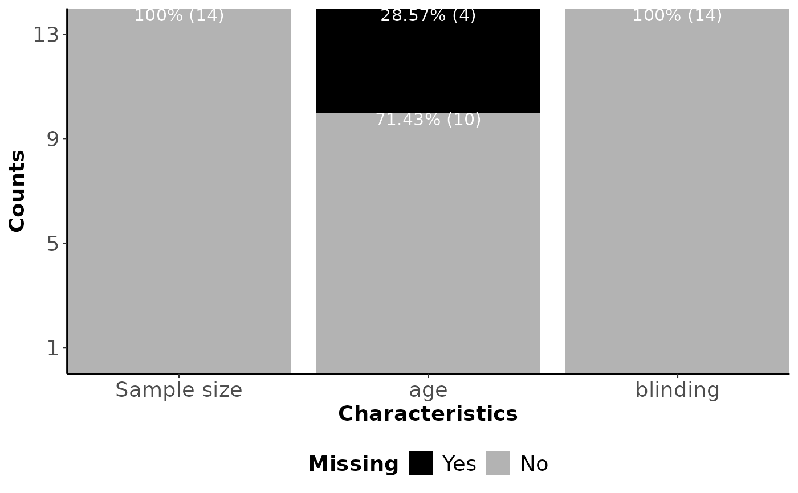
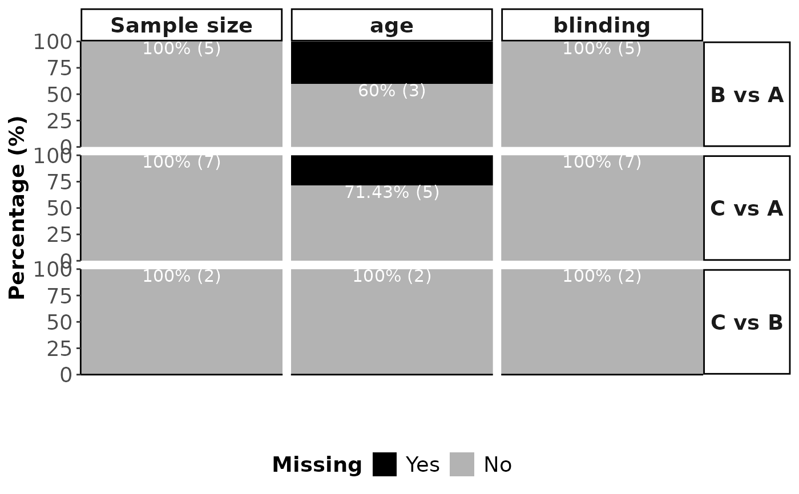

Visualising missing data in characteristics (Comparisons' comparability for transitivity evaluation)
Source:R/miss.characteristics_function.R
miss_characteristics.Rdmiss_characteristics hosts a set of visualisation tools to assess
the size and pattern of missing characteristics values in the dataset.
Usage
miss_characteristics(
input,
drug_names,
rename_char = NULL,
label_size = 4,
axis_title_size = 14,
axis_text_size = 14,
axis_x_text_angle = 0,
legend_text_size = 14,
legend_title_size = 14,
strip_text_size = 14,
strip_text_angle = 0
)Arguments
- input
A data-frame in the long arm-based format. Two-arm trials occupy one row in the data-frame. Multi-arm trials occupy as many rows as the number of possible comparisons among the interventions. The first two columns refer to the trial name, and the pairwise comparison, respectively. The remaining columns refer to summary characteristics. See 'Details' for the specification of the columns.
- drug_names
A vector of labels with the name of the interventions in the order they appear in the argument
input.- rename_char
A list of two elements: (i) a numeric vector with the position of the characteristics in
input, and (ii) a character vector with the names of the characteristics, as they are wished to appear in the title of the plots. This argument is optional, in case the user wants to control the appearance of the titles.- label_size
A positive integer for the font size of labels in the plots.
label_sizedetermines the size argument found in the geom's aesthetic properties in the R-package ggplot2).- axis_title_size
A positive integer for the font size of axis titles in the plots.
axis_title_sizedetermines the axis.title argument found in the theme's properties in the R-package ggplot2).- axis_text_size
A positive integer for the font size of axis text in the plots.
axis_text_sizedetermines the axis.text argument found in the theme's properties in the R-package ggplot2).- axis_x_text_angle
A positive integer for the angle of axis text in plots related to missing data.
axis_text_angledetermines the axis.text.x argument found in the theme's properties in the R-package ggplot2).- legend_text_size
A positive integer for the font size of legend text in the plots.
legend_text_sizedetermines the legend.text argument found in the theme's properties in the R-package ggplot2).- legend_title_size
A positive integer for the font size of legend title in the plots.
legend_title_sizedetermines the legend.title argument found in the theme's properties in the R-package ggplot2).- strip_text_size
A positive integer for the font size of strip text in the plots.
strip_text_sizedetermines the strip.text argument found in the theme's properties in the R-package ggplot2).- strip_text_angle
A positive integer for the angle of strip text in the plots.
strip_text_angledetermines the strip.text argument found in the theme's properties in the R-package ggplot2).
Value
miss_characteristics returns the following list of elements:
- Barplot_missing_combined
A panel of barplots on the percentage of missing and observed cases for each comparison and characteristic.
- Barplot_missing_characteristics
A barplot on the percentage of missing and observed cases for each comparison.
- Tileplot_missing
A plot that illustrates the position of missing cases for each trial, comparison and characteristic.
Details
The correct type mode of columns in input must be ensured to use
the function miss_characteristics. The first two columns referring
to the trial name, and pairwise comparison, respectively, must be
character. The remaining columns referring to the characteristics
must be double or integer depending on whether the
corresponding characteristic refers to a quantitative or qualitative
variable. The type mode of each column is assessed by
miss_characteristics using the base function typeof.
The interventions should be sorted in an ascending order of their
identifier number within the trials so that the first treatment column
(second column in input) is the control arm for every pairwise
comparison. This is important to ensure consistency in the order of
interventions within the comparisons obtained from the other related
functions.
Examples
# \donttest{
# Fictional dataset
set.seed(13022024)
data_set <- data.frame(Trial_name = as.character(1:(5 + 7 +2)),
arm1 = rep(c("1", "2"), c(5 + 7, 2)),
arm2 = rep(c("2", "3"), c(5, 7 + 2)),
sample = as.numeric(sample(c(50:300), 5 + 7 + 2)),
age = as.numeric(sample(c(18:50), 5 + 7 + 2)),
blinding = factor(rep(c("yes", "no", "yes"), c(5, 7, 2))))
data_set$age[data_set$age < 30] <- NA
miss_characteristics(input = data_set,
drug_names = c("A", "B", "C"))
#> $Barplot_characteristics

#>
#> $Barplot_combined

#>
#> $Tileplot
 #>
# }
#>
# }